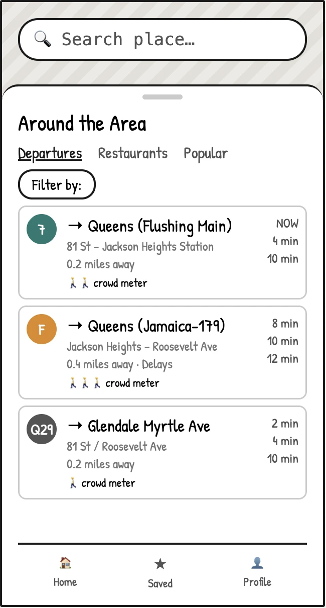
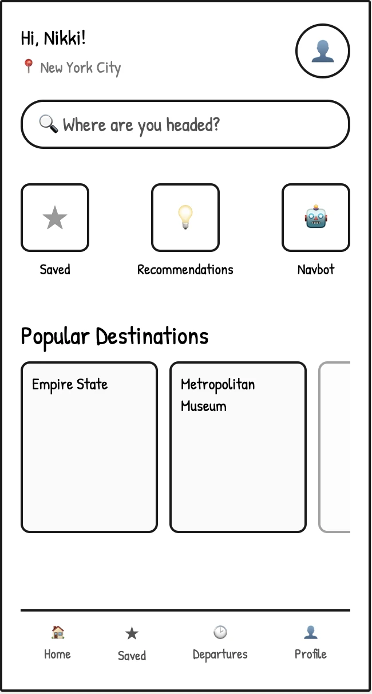
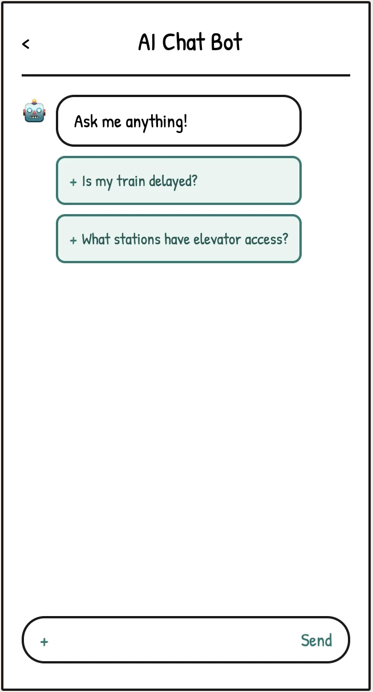
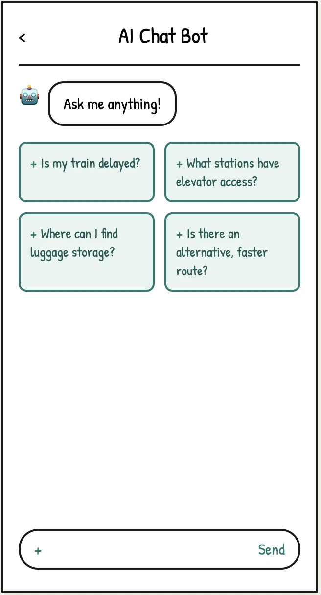
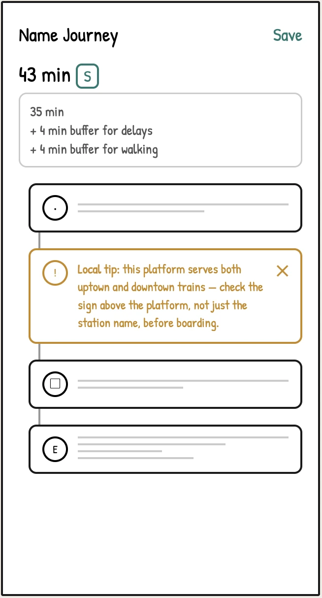
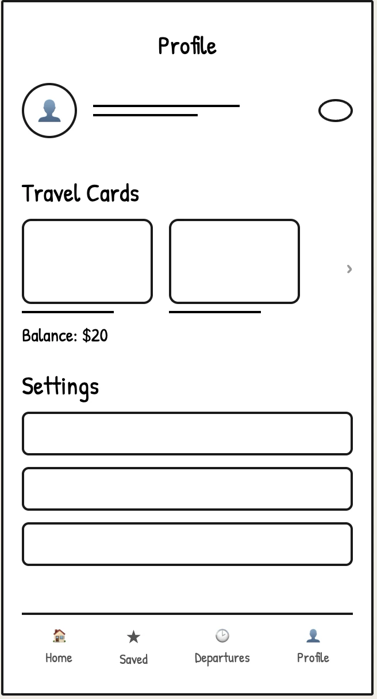

Main Screens
- Homepage: Search bar alongside curated local discovery
- Saved: Upcoming and past journeys, plus saved locations
- Departures: Real-time schedules for nearby transportation
- Profile: Travel cards to manage funds and track transit spending

Tourist Confidence System for NYC Transit Navigation
Problem
NYC tourists struggle with unpredictable delays, city-specific terminology that existing apps don't explain, and a lack of trustworthy local recommendations, leaving them feeling anxious and unsupported throughout their trip.
Solo
UX/UI Designer
Jun – Aug 2025
Key Outcome
Designed a tourist-first NYC transit app with Safe Arrival mode for delay recovery, a NavBot AI assistant for real-time guidance, simplified fare and payment flows, and curated local recommendations, giving visitors a complete support system for navigating the city on their own.
What I Drove
Transit Pal is a tourist-focused NYC transit app featuring Safe Arrival mode, curated local recommendations, and an integrated AI chatbot that helps visitors navigate the city with confidence, even when things go wrong.
You are now viewing:
01 Solution


02 Research
Whenever I traveled, I found myself confused by transit signs and directions in unfamiliar cities. Since I'm from New York, where even locals get lost sometimes, I suspected tourists faced unique struggles that existing navigation apps weren't solving, so I decided to look into it.
I conducted a SWOT analysis of the most popular transit apps to identify what they got right and where they systematically failed tourists.
Key Finding
The finding was consistent across all apps: existing transit apps are designed for locals, not visitors. They give directions without context, show delays without explanation, and offer no curated path for someone exploring the city for the first time.
I interviewed four non-native New Yorkers in their 20s who had previously visited NYC, and organized their frustrations into four common categories:
"My stop was skipped so many times because I accidentally got on the express train, not knowing it was different from the local."
"I'm always confused by terms like 'uptown' vs. 'downtown' or 'Queens-bound' vs. 'Brooklyn-bound.' I'm not familiar with the city's geography."
03 Define
These pain points pointed to a single design challenge:
04 Ideation
Each of the four pain points mapped directly to a design solution:
05 Design
My first home screen showed tourists the train and bus times nearest to them the moment they opened the app. But after thinking deeper into what tourists actually needed, I realized they also needed help figuring out where to go in the first place. I redesigned the home screen to put recommendations and navigation directly on the page alongside transit access to better match what tourists actually needed.


Pain Points Addressed: Navigation & Accessibility · Recommendations & Discovery
I integrated an AI chatbot to support tourists encountering unpredictable mid-trip situations (delays, missed trains, construction) where quick in-person help isn't available. NavBot lets users ask real-time questions in natural language and get instant, specific responses.
I designed NavBot to feel like a chat room: familiar, low-pressure, and fast. I tested two layouts:


Pain Points Addressed: Navigation & Accessibility · Recommendations & Discovery
The directions page includes Safe Arrival mode, which adds buffer time for delays, walking, and missed transfers. Pop-up notifications explain city-specific terminology, delays, and payment cues directly in the flow.

Pain Points Addressed: Navigation & Accessibility · Timing & Scheduling
No app currently allows tourists add money to their OMNY card. I designed a profile page that links transit cards directly, allowing users to navigate and pay all in one place, removing payment anxiety entirely.

Pain Points Addressed: Payment
Tourists visit NYC for many different reasons. To avoid a one-size-fits-all result page, I organized recommendations into six categories ranging from local favorites to must-see attractions — giving different types of tourists a clear starting point without endless scrolling.


Pain Points Addressed: Recommendations & Discovery
My goal was to create a navigation experience that feels trustworthy, confident, and calm. I connected the design to NYC itself by pulling the primary blue from the MTA's own visual identity, making the app feel local to the system it navigates.
Heading 1 Body Medium
Heading 2 Body Regular
Heading 3 Body Light
06 Impact
Each feature targets a specific anxiety point in a tourist's journey. If Transit Pal shipped, the success metrics would correlate directly to those moments, not just overall usage.
07 Reflection
What I learned: Transit Pal taught me that designing for tourists was really about designing for anxiety. The goal was never just directions; it was helping people feel confident navigating somewhere completely unfamiliar.
What I contributed: I designed Safe Arrival mode for real-time delay updates, in-app fare payment, personalized local recommendations, step-by-step transit explanations that decode NYC-specific language, and a NavBot AI assistant for immediate help.
What I'm taking forward: I want to explore personalized onboarding that adapts to different trip goals, like a day visit versus a longer stay. There's also an opportunity to make the itinerary smarter by automatically adjusting if someone falls behind schedule.
back to top ↑